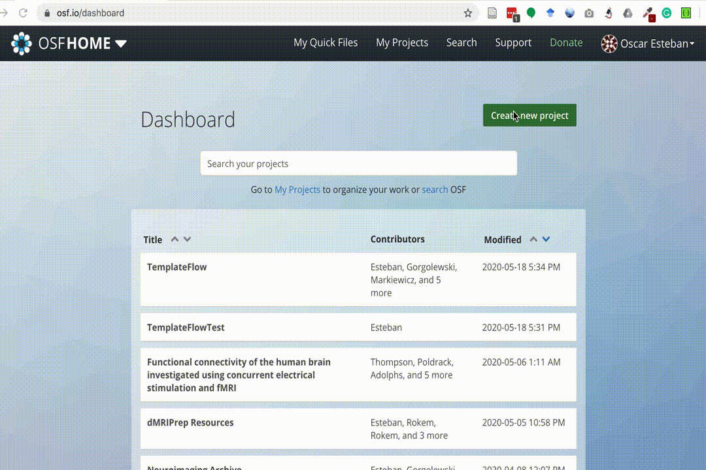

Submitting a new template
Who is this tutorial for?
First, this is intended for those wishing to add templates to TemplateFlow. Second, this is for people who want to add a template directory that does not already exists. TemplateFlow consists of multiple templates sorted by the space the template is in. This tutorial tells you how to add a new template space.
If you want to fix, improve or extend an existing template please refer to the Updating templates documentation (work in progress).
This tutorial assumes you have read and understood the contributing guidelines .
Overview: Submission pipeline and the TemplateFlow Manager tool ¶
 To contribute a new template to
TemplateFlow
, members of the community first organise template resources to conform to the BIDS-like
TemplateFlow
structure.
Next, the
TemplateFlow Manager
tool (
To contribute a new template to
TemplateFlow
, members of the community first organise template resources to conform to the BIDS-like
TemplateFlow
structure.
Next, the
TemplateFlow Manager
tool (
tfmgr
) synchronises the resources to OSF cloud storage and opens a new pull request proposing the addition of the new template.
A subsequent peer-review process ensures that all data are conformant with the
TemplateFlow
standard.
Finally,
TemplateFlow
curators conclude the peer-review process with the merge of the pull request, thereby adding the template into the
TemplateFlow Archive
.
Step 1: Organize your template tree ¶
TemplateFlow follows a BIDS-like structure, please make sure your tree is formatted following the naming conventions .
Examples
Please check the formatting of existing templates in the Archive browser
Step 2: Create a new public project at osf.io ¶
Head to your OSF home and create a new project. Make sure you make your project public and write down the project identifier from the URL.

Step 3: Install the TemplateFlow Manager and
tfmgr add
your template
¶
Installing the manager is as easy as:
pip install git+https://github.com/templateflow/python-manager@master
Once the manager is installed, you should be able to print out its version:
$ tfmgr --version
TF Archive manager 20.0.0
Finally, set up your OSF and GitHub authorization details and call
add
.
It is fundamental to copy here the OSF project ID from step 2.
$ export OSF_USERNAME='some@email.com'
$ export OSF_PASSWORD='****'
$ export GITHUB_USER='oesteban'
$ export GITHUB_PASSWORD='****' # or personal access token
# Assuming the template is at the current directory, under tpl-Name/
$ tfmgr add tpl-Name --osf-project '<project_id>'
Wrapping up ¶
This screencast summarizes the three-step process above: